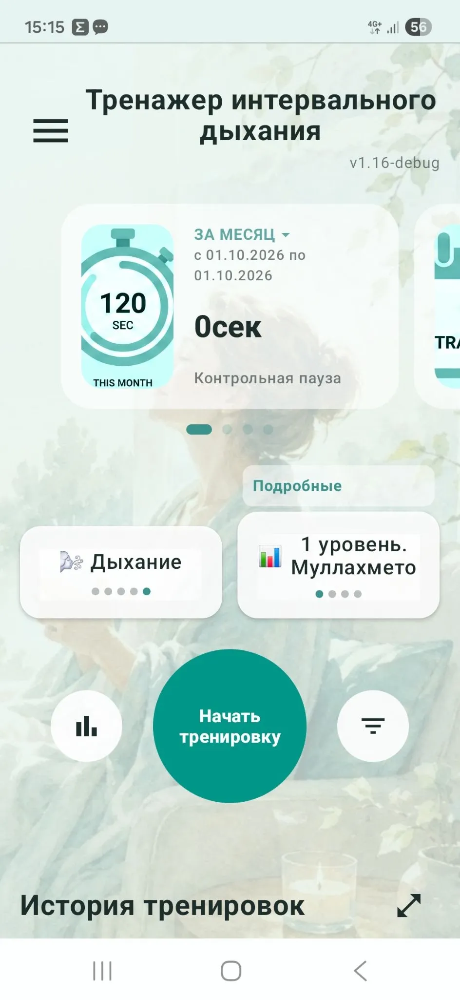
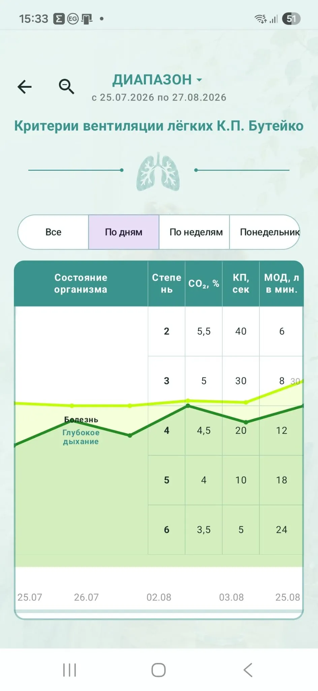
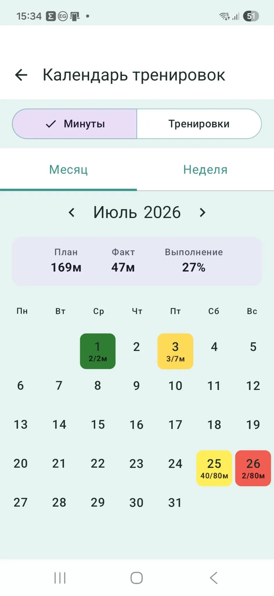

Интервальная ВЛГД
Русский | Українська | English
Приложение помогает удобно организовать интервальную практику.
В отличие от большинства дыхательных приложений, здесь нет задачи задавать пользователю определённую продолжительность вдоха, выдоха или задержки дыхания. Практика ВЛГД строится иначе: человек уменьшает дыхание за счёт расслабления до ощущения лёгкого недостатка воздуха, а затем получает время для восстановления и отдыха.
Приложение помогает правильно организовать эту интервальную работу.



Как работает приложение
Во время тренировки чередуются два состояния:
Практика ВЛГД
Пользователь уменьшает дыхание в соответствии с принципами классического метода Бутейко.
Отдых
После активного интервала приложение даёт время восстановить внимание, расслабиться и дышать естественно. О начале и окончании интервалов сообщают таймер и звуковые сигналы, поэтому во время практики не нужно постоянно смотреть на экран.
Возможности
Приложение позволяет:
- выбирать готовые уровни и схемы тренировок;
- проводить интервальные занятия ВЛГД;
- использовать звуковые сигналы для смены этапов;
- фиксировать контрольную паузу;
- сохранять историю тренировок;
- отслеживать время занятий;
- анализировать выполнение плана;
- просматривать результаты по дням, неделям и выбранному диапазону;
- использовать календарь тренировок;
- наблюдать динамику показателей и прогресса.
Главное отличие от обычных дыхательных приложений
Большинство дыхательных тренажёров работают с фазами дыхательного цикла:
вдох → выдох → задержка → следующий вдох.
«Интервальная ВЛГД» не задаёт такие фазы.
Здесь основой является чередование:
практика уменьшения дыхания → отдых → практика → отдых.
Такой подход соответствует логике классического метода Бутейко и помогает сохранять концентрацию во время длительной практики.
Для кого
Приложение предназначено для людей, которые практикуют метод Бутейко и хотят более удобно организовать регулярные занятия, контролировать продолжительность тренировок и отслеживать свой прогресс.
Работа без интернета
Основные функции приложения доступны офлайн, поэтому проводить тренировку можно без постоянного подключения к интернету.
История и статистика
Все выполненные тренировки сохраняются в истории.
Пользователь может анализировать:
- количество тренировок;
- общее время практики;
- выполнение плана;
- данные за отдельный день, неделю, месяц или другой период;
- изменение показателей во времени.
Медицинское предупреждение
Приложение предназначено для самостоятельной организации дыхательной практики и не является медицинским изделием.
Оно не предназначено для диагностики, лечения или предотвращения заболеваний и не заменяет консультацию врача или другого квалифицированного медицинского специалиста.
Автор
Алик Муллахметов
Методист-ревизор ВЛГД, преподаватель оздоровительного дыхания.
Сайт: buteyko.com.ua
🇺🇦 Українська
Інтервальна ВЛГД — тренажер для практики методу Бутейка
Застосунок допомагає зручно організувати інтервальну практику.
На відміну від більшості дихальних застосунків, тут немає завдання задавати користувачеві певну тривалість вдиху, видиху або затримки дихання. Практика ВЛГД будується інакше: людина зменшує дихання за рахунок розслаблення до відчуття легкого нестачі повітря, а потім отримує час для відновлення та відпочинку.
Застосунок допомагає правильно організувати цю інтервальну роботу.
Як працює застосунок
Під час тренування чергуються два стани:
Практика ВЛГД
Користувач зменшує дихання відповідно до принципів класичного методу Бутейка.
Відпочинок
Після активного інтервалу застосунок дає час відновити увагу, розслабитися та дихати природно.
Про початок і завершення інтервалів повідомляють таймер і звукові сигнали, тому під час практики не потрібно постійно дивитися на екран.
Можливості
Застосунок дозволяє:
- обирати готові рівні та схеми тренувань;
- проводити інтервальні заняття ВЛГД;
- використовувати звукові сигнали для зміни етапів;
- фіксувати контрольну паузу;
- зберігати історію тренувань;
- відстежувати час занять;
- аналізувати виконання плану;
- переглядати результати за днями, тижнями та вибраним періодом;
- використовувати календар тренувань;
- спостерігати динаміку показників і прогресу.
Головна відмінність від звичайних дихальних застосунків
Більшість дихальних тренажерів працюють із фазами дихального циклу:
вдих → видих → затримка → наступний вдих.
«Інтервальна ВЛГД» не задає такі фази.
Тут основою є чергування:
практика зменшення дихання → відпочинок → практика → відпочинок.
Такий підхід відповідає логіці класичного методу Бутейка та допомагає зберігати концентрацію під час тривалої практики.
Для кого
Застосунок призначений для людей, які практикують метод Бутейка та хочуть зручніше організувати регулярні заняття, контролювати тривалість тренувань і відстежувати свій прогрес.
Робота без інтернету
Основні функції застосунку доступні офлайн, тому проводити тренування можна без постійного підключення до інтернету.
Історія та статистика
Усі виконані тренування зберігаються в історії.
Користувач може аналізувати:
- кількість тренувань;
- загальний час практики;
- виконання плану;
- дані за окремий день, тиждень, місяць або інший період;
- зміну показників у часі.
Медичне попередження
Застосунок призначений для самостійної організації дихальної практики та не є медичним виробом.
Він не призначений для діагностики, лікування або запобігання захворюванням і не замінює консультацію лікаря або іншого кваліфікованого медичного спеціаліста.
Автор
Алік Муллахметов
Методист-ревізор ВЛГД, викладач оздоровчого дихання.
Сайт: buteyko.com.ua
Telegram: @alikmullahmetov
Viber, WhatsApp: +38 099 717 3275
Email: noastma@gmail.com
🇬🇧 English
Interval VLHD — Training App for the Buteyko Method
The application helps organize interval-based breathing practice in a convenient way.
Unlike most breathing apps, it does not require the user to follow a fixed duration for inhalation, exhalation, or breath-holding phases. VLHD practice is structured differently: the user reduces breathing through relaxation until a mild feeling of air hunger appears, followed by a period of recovery and rest.
The application helps organize this interval-based practice correctly.
How the App Works
During a training session, two states alternate:
VLHD Practice
The user reduces breathing in accordance with the principles of the classical Buteyko Method.
Rest
After an active interval, the application provides time to restore attention, relax, and breathe naturally.
A timer and sound signals indicate the beginning and end of each interval, so the user does not need to constantly look at the screen during practice.
Features
The application allows users to:
- choose ready-made training levels and programs;
- perform interval VLHD sessions;
- use sound signals to switch between stages;
- record the Control Pause;
- save training history;
- track training duration;
- analyze plan completion;
- view results by day, week, or selected date range;
- use a training calendar;
- monitor changes in indicators and progress over time.
Main Difference from Standard Breathing Apps
Most breathing training apps work with phases of the breathing cycle:
inhale → exhale → breath hold → next inhale.
“Interval VLHD” does not prescribe these breathing phases.
Instead, the core principle is:
reduced-breathing practice → rest → practice → rest.
This approach follows the logic of the classical Buteyko Method and helps maintain concentration during longer practice sessions.
Who It Is For
The application is intended for people who practice the Buteyko Method and want a more convenient way to organize regular sessions, control training duration, and monitor their progress.
Offline Use
The main functions of the application are available offline, so training sessions can be performed without a continuous internet connection.
History and Statistics
All completed training sessions are stored in the history.
Users can analyze:
- number of training sessions;
- total practice time;
- training-plan completion;
- data for a specific day, week, month, or another selected period;
- changes in indicators over time.
Medical Disclaimer
The application is intended to assist users in organizing independent breathing practice and is not a medical device.
It is not intended to diagnose, treat, or prevent disease and does not replace consultation with a physician or another qualified healthcare professional.
Author
Alik Mullakhmetov
VLHD Methodologist-Reviewer, breathing practice instructor.
Website: buteyko.com.ua
Telegram: @alikmullahmetov
Viber, WhatsApp: +38 099 717 3275
Email: noastma@gmail.com